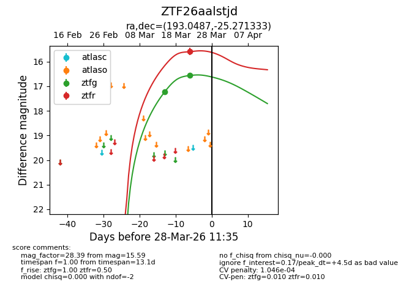
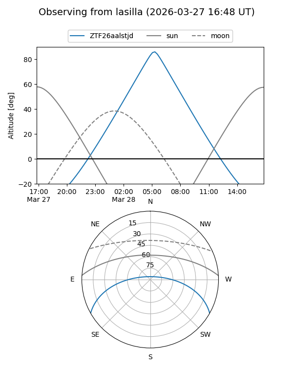
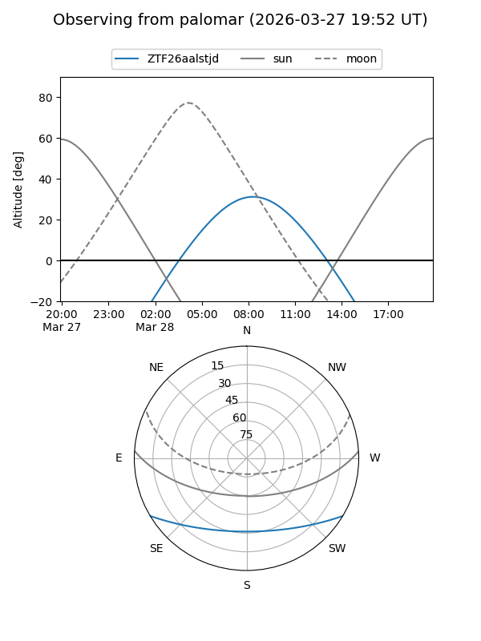
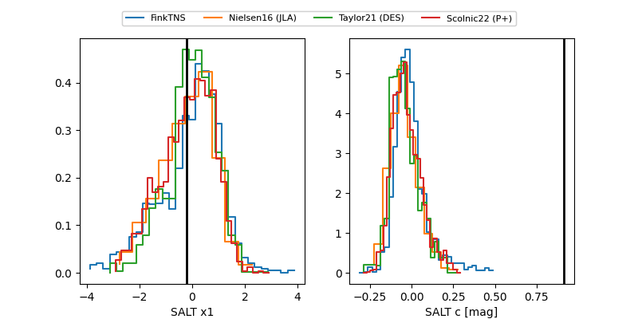

ZTF26aalstjd
Target ZTF26aalstjd at 2026-03-28 11:38
Aliases and brokers:
FINK: link
Lasair: link
ALeRCE: link
alt names
ZTF26aalstjd (ztf,fink_ztf)
Coordinates:
equatorial (ra, dec) = 193.0487,-25.27133
equatorial (HMS+DMS) = 12:52:11.69,-25:16:16.80
galactic (l, b) = (303.1479,+37.60010)
Flags:
likely cv
Photometry:
last ztfg=16.56, ztfr=15.59
2 ztfg, 1 ztfr detections
Lightcurve

Visibility


Additional plots
